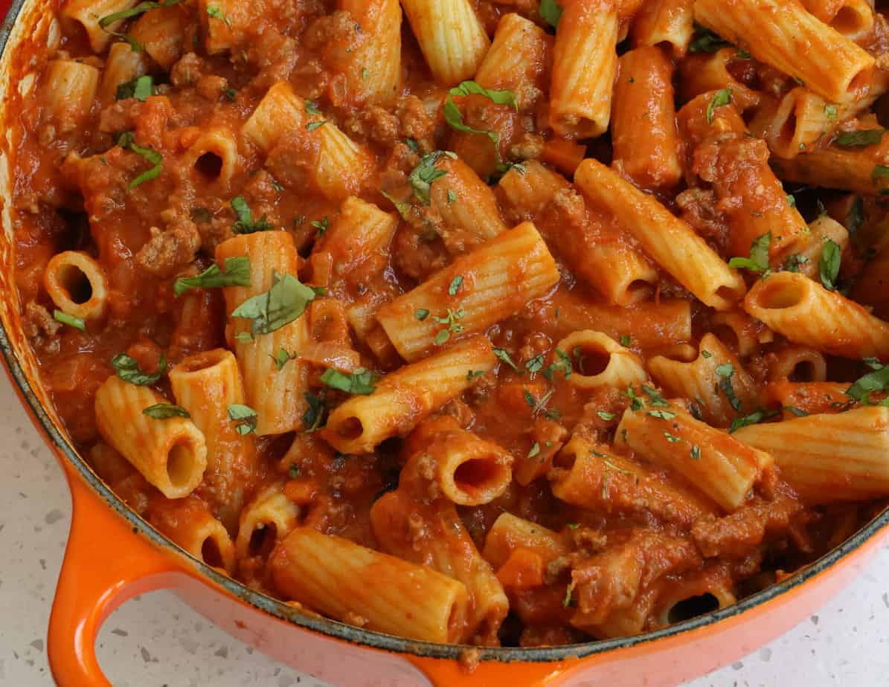

Bolognese Pasta

Decription
This is a simple and easy delicious recipe to make the lovely bolognese pasta.
A combination of meat, tomato sauce and pasta to make this yummy meal for any occasion.
Ingredients
- Olive Oil
- Onion
- Garlic
- Celery
- Carrots
- Heavey Cream
- Ground Beef
- Marinara Sauce
- Pasta
Steps
- Saute the carrots, celery and onion
- Stir in the ground beef
- Pour in your jar of marinar sauce
- Simmer! About 30 minutes will let it thicken and cook down
- Boil pasta during the simmering phase
- When sauce has reached desired thickness, add heavy cream
- Combine the bolognese sauce with al dente pasta
- ENJOY!!!